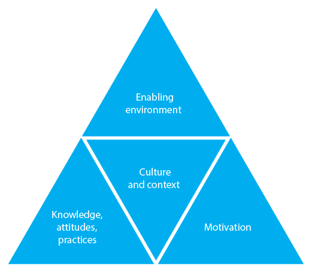

Overview
- During an epidemic, it is important to work with the community to change risky behaviour quickly in order to stop the disease from spreading.
- Our goal in an epidemic is to identify barriers to change and, working with the community, develop a strategy that will mobilize communities to protect themselves by adopting safer, less risky behaviour.
- Safer behaviours may include agreeing to and accepting vaccinations, washing hands with soap at the five critical times, regularly wearing mosquito repellent, consistently using a mosquito net, or agreeing to be isolated from others while sick.
What you need to know
- People in your community must be involved in efforts to change their behaviour. Fear, grief, social norms, cultural and religious beliefs, traditional practices, and misinformation all influence behaviour and need to be taken into account when health interventions are planned.
- Simply providing information about an epidemic will not cause people to change their behaviour. Consider the five stages of behaviour change.
- It is important to talk to people about their beliefs, norms, ideas and fears with respect to the disease, to listen carefully to what they say, and take their opinions into account. Once you understand what people know, believe, and do, you can begin to think about influencing their behaviour. You can decide how you will share with people the information you have about the disease, its symptoms, how it is spread, and how it is treated.
- Any social mobilization or behaviour change strategy you use must place the community at its centre, including when you identify solutions and strategies.
What is behaviour change in an epidemic?
In any context, behaviour change involves three elements. Before people will change their behaviour:
- They need to know what, why and how they should change. They need knowledge.
- They need to have the right equipment, access and capacity. They need an enabling environment.
- They need to be motivated to change.
